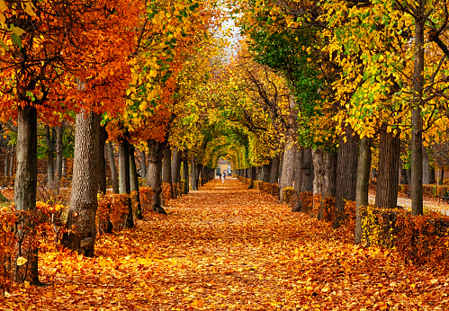

Hello! Welcome to my photoraphy world!

"I hope I can be the autumn leaf, who looked at the sky and lived. And when it was time to leave, gracefully it knew life was a gift." – Dodinsky

"The wind is rising, and the air is wild with leaves. We have had our summer evenings; now for October eves!" – Humbert Wolfe

"There is something so special in the early leaves drifting from the trees–as if we are all to be allowed a chance to peel, to refresh, to start again." – Ruth Ahmed

"It was a beautiful, bright autumn day, with air like cider and a sky so blue you could drown in it." – Diana Gabaldon